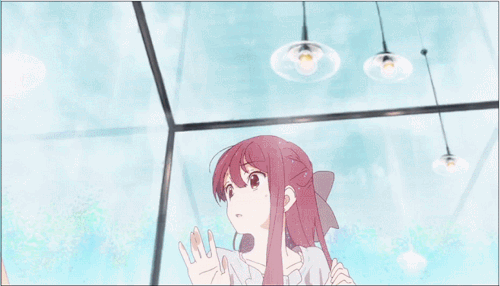
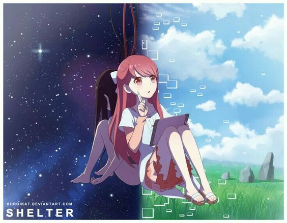
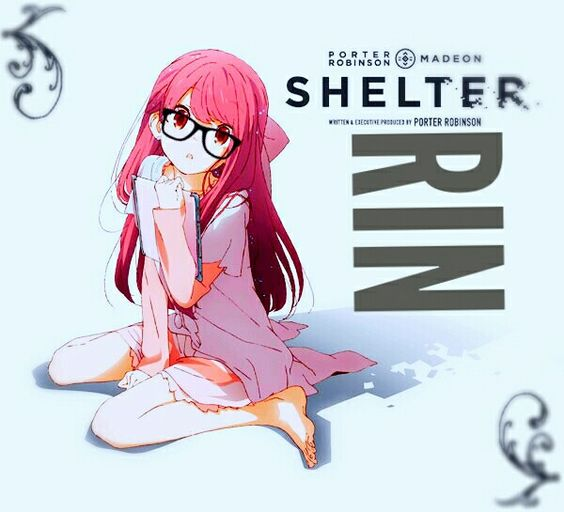

Características Pessoais
Nome:Rin Idade: 17 anos Sexo: Feminino Altura: 1.58 metros
 Características Pessoais
Classe: Baixa 3-C/1 fisicamente, Alta 3-B/3 com o tablet
Talentos: Resistência Sobre-Humana, Criação, Destruição, Manipulação da Realidade, Manipulação Climática, Manipulação da Temperatura, Manipulação Elementar (Das variedades Água, Terra, Gelo, Luz e Escuridão) e Manipulação da Nulidade, Telecinesia


Notas
Esse perfil considera Rin dentro do mundo virtual. Fora dele, ela é uma humana normal, se não até mais fraca do que o normal.